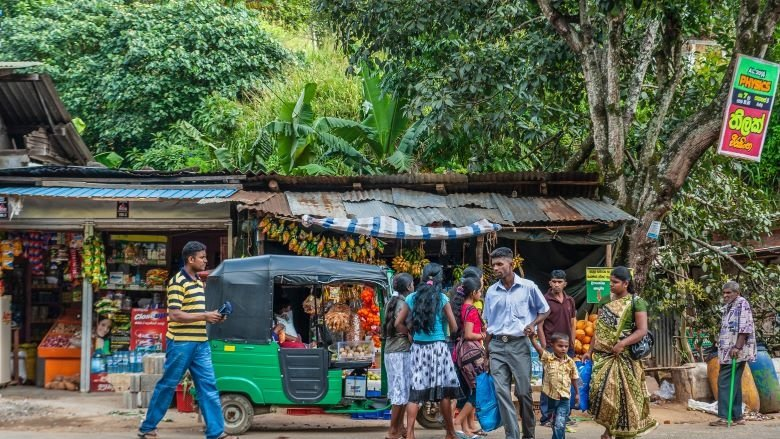
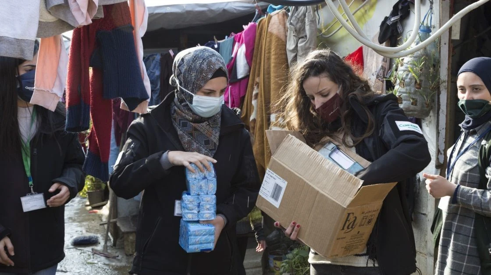

Poverty is a global issue that affects millions of people, limiting their access to basic needs such as food, shelter, healthcare, and education. Solving poverty requires a combination of economic, social,
and governmental efforts. Some key solutions include improving education, creating job opportunities, supporting small businesses, providing social welfare programs, and ensuring equal access to resources.
By working together—governments, organizations, and individuals—sustainable solutions can be developed to reduce poverty and improve the quality of life for those in need.
1. Solutions for Economic
1.1 Ways to Ease Youth Unemployment and Underemployment
Millions of school youth are currently unemployed or underemployed. This number increases per year for various reasons. Some cannot follow an academic curriculum. Others do not have an interest in school work.
For many, families do not have the money to support them in schools, and they need to contribute to family revenue by helping with rice growing and animal care.
Perhaps, some find marginal jobs in the city in the hope of earning enough money to attend private training institutions to acquire language and computer skills for improved employment. But very few can do this.
Training in the workplace
Employers used to train entry-level employees, allowing them to gain experience and climb the career ladder. Today, employers favour outside hires with ready-to-go experience. This change has hurt young job-seekers. It is best to reward employers who invest in on-the-job training with tax credits.
Youth employment services
Link skills training with an employer and industry needs. Involve business at the local level in the design of employment and training programs.
Businesses would commit to hiring graduates of training programs, and they would track outcomes to create a feedback loop to improve the program design. Strengthen the National Employment Agency with a youth services unit to do research and provide career counselling.
Unemployment
1.2 Strategies to address income inequality and poverty
Improve wages for people with low income
Increase the income of people individuals through supplemental income, including Social Security, disability insurance, Temporary Assistance for Needy Families, and tax credits, as well as through increased wages, including as increased minimum wage.
Preserve, Protect and Expand Social Protections
Protect against loss of income caused by health events such as illness, accidents and childbirth by streangthening the social safety net - for example, by mandating or incentivizing paid sick leave and parental leave.
1.3 Embrace Cash and Microfinance
One of the ways Cambodias transition from wartime to peace (including the repatriation of over 300,000 Cambodian refugees) was so smooth was thanks to the idea of buying on credit. While such an influx of returnees could place a strain on resources and
create financial dire straits, microfinancing models introduced into the country helped to establish savings, loans, insurance, and cash transfer services in communities that need them the most, allowing people to purchase the tools and services they need in order to become self-sufficient. Between 1998 and 2018, Cambodia's economy grew by an average of 8% each year, and its middle class began to flourish
Sometimes, a small startup grant (even as small as $100) is all it takes to help a family living below the poverty line to launch a new business while keeping on top of their bills and keeping their children fed. The net effect is that they are able to lift themselves out of poverty, for good.
2. Solutions for Social
ways to make social protection work for Sri Lankas poor and vulnerable
Research shows that Samurdhi and other social protection schemes in Sri Lanka are bogged down by administrative inefficiencies and possible political interference and consequently are not reaching those most in need. Many who are eligible for benefits are excluded, while others who are not eligible are receiving support. These failures contribute to further deteriorating living standards of the poor who
have been severely affected due to the COVID-19 pandemic and the ongoing economic crisis. To fix this, Sri Lanka needs a social protection system that serves its poor and overcomes the weaknesses of the existing system.
Under the current social protection system, there are several cash transfer schemes that are handled by different government institutions. For example, Samurdhi is handled by Samurdhi Development Authority and transfers made to beneficiaries using Samurdhi banks. The allowance for the elderly is handled by the Elderly Secretariat, and the allowances are provided via post offices. The allowances for
People with Disabilities are handled by the Disability Secretariat and transfers are made through post offices. This fragmented nature has resulted in many administrative inefficiencies including delays in adding new recipients to the rolls and providing cash to existing beneficiaries. Often the poor have to queue up at local government offices for hours, sometimes several days, to receive their cash
payments and some applicants must wait an exceedingly long time to enroll in social protection programs.

People walking in front of roadside shops in Sri Lanka
Citizens also have a role to play in ensuring the accountability of the system. It is essential to use input received from citizen engagement to carry out periodic reviews of how the social protection system is actually working on the ground and to include a grievance handling mechanism. The WBB is setting up a grievance mechanism to flag problems and persistent issues in the system so that they can be fixed.
As Sri Lanka works to recover and reset from its worst economic crisis in decades, now is the time to turn crisis into an opportunity to build a resilient and fair social protection system that benefits the people who need it most - Sri Lanka's poor and vulnerable.
3. Solutions for Political
3.1 Enhance International Cooperation and Partnerships
Enhance International Cooperation and Partnerships
INL's efforts to strengthen country systems are enhanced by strengthening the abilities of countries to cooperate internationally and building up frameworks that facilitate such cooperation. This includes capacity building efforts related to strengthening international legal cooperation, complex case investigation, asset recovery, and multi-country networks of practitioners. These relationships and
networks often benefit U.S. law enforcement in their pursuit of schemes with a nexus to the United States.
As one of the Department's primary leads on multilateral anti-corruption policy, INL also coordinates U.S. participation in and engagement with a variety of high-profile multilateral bodies and initiatives, including within the auspices of the UNCAC, OAS, APEC, G7, and the G20, as well as the anti-corruption pillars of President Biden's signature Summit for Democracy Initiative and the Indo-Pacific Economic
Framework for Prosperity (IPEF). Through this engagement, INL helps develop and promote strong international standards and encourage implementation of policies and practices necessary to effectively counter corruption around the world.
3.2 End war and conflict

Concern staff distribute supplies among Syrian refugees in Lebanon. (Photo: Gavin Douglas/ Concern Worldwide)
We've seen this play out time and again: While estimates around data for the country vary, Syria's poverty rate has increased from approximately
12% in 2007 to 83% in 2019. Conversely, in Nepal, a decade-long civil war came to a close in 2006, which correlates with a sharp increase in gross national income (GNI) and gross domestic product (GDP) year over year. Likewise, the establishment of a United Nations peacekeeping
operation in Cambodia in 1992 (following a deadly civil war and war with Vietnam) helped to forge stability within the country and grow its middle class: The country's poverty rate dropped from 47.8% in 2007 to 13.5% by 2014.
4. Solutions for Environmental Factors
Especially climate resilience
Resilience against climate change is especially important and deserves its own mention. According to the World Bank, climate change could force an additional 100 million people into extreme poverty over the next decade without any urgent action taken.
From drought in the Horn of Africa to floods in Pakistan and monsoon season in Bangladesh, we can't prevent the natural disasters that are becoming more frequent and destructive year after year. But we can help the communities most vulnerable to these crises become better prepared in order to protect their farms, their homes, their loved ones, and their livelihoods. Eco-friendly farming techniques such as
Climate Smart Agriculture preserve vital topsoil, allowing land to recover from degradation, and better adapt to extreme weather.